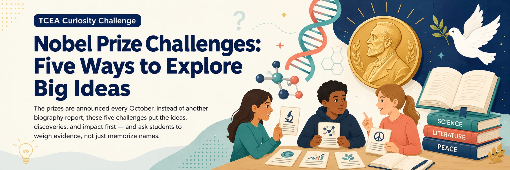

Learning Activities Hub
›
Curiosity Challenge
› Nobel Prize

Nobel Prize Challenges: Five Ways to Explore Big Ideas
🕒 Mix & match · 20–40 min each
🔬 Science · ELA · Civics · Media literacy
Teacher guide & answer key
🖨️ Printable student pack
Printable teacher key
Privacy
Accessibility
Choose a challenge